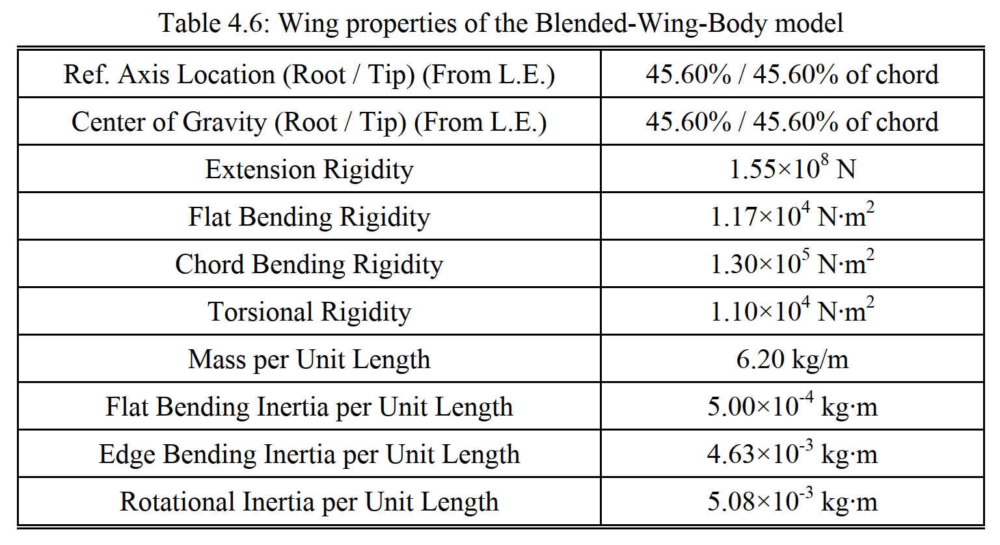
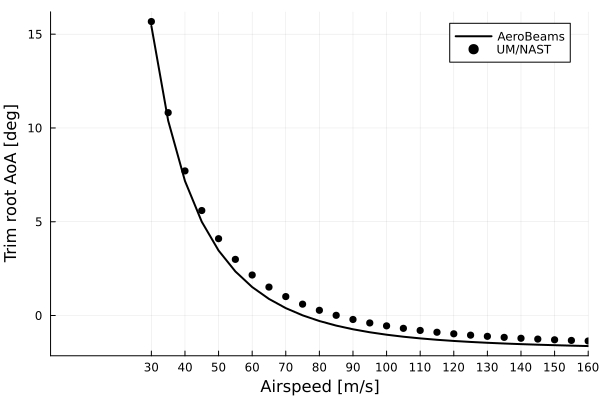
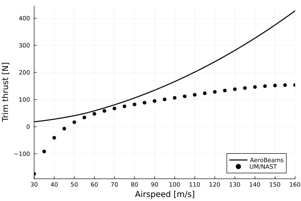
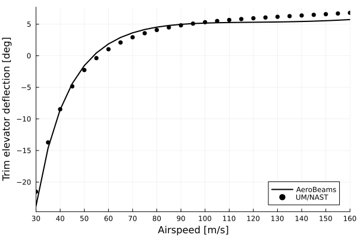
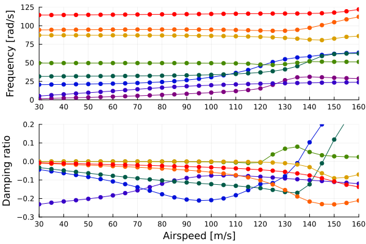
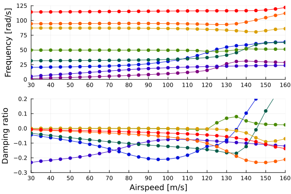
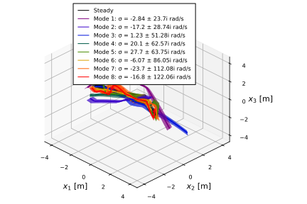

Flutter of a Blended-Wing-Body
This example illustrates how to set up a flutter analysis of an aircraft in free flight. For that we take a Blended-Wing-Body (BWB) vehicle, a swept flying-wing with trailing-edge control surfaces. This aircraft model was described in Weihua Su's PhD thesis:
 BWB model geometry by Su
BWB model geometry by Su
 BWB's body properties by Su
BWB's body properties by Su
 BWB's wing properties by Su
The code for this example is available here.
Problem setup
Let's begin by setting up the variables of our problem.
using AeroBeams, DelimitedFiles, LinearInterpolations
# Aerodynamic solver
aeroSolver = Indicial()
# Flight altitude
h = 0e3
# Airspeed range
URange = collect(30:2:160)
# Number of vibration modes
nModes = 8
# Pre-allocate memory and initialize output arrays
trimAoA = Array{Float64}(undef,length(URange))
trimThrust = Array{Float64}(undef,length(URange))
trimδ = Array{Float64}(undef,length(URange))
untrackedFreqs = Array{Vector{Float64}}(undef,length(URange))
untrackedDamps = Array{Vector{Float64}}(undef,length(URange))
untrackedEigenvectors = Array{Matrix{ComplexF64}}(undef,length(URange))
freqs = Array{Vector{Float64}}(undef,length(URange))
damps = Array{Vector{Float64}}(undef,length(URange))For the trim problem, we set a Newton-Raphson solver for the system of equations, with the adequate relaxation factor for trim problems (relaxFactor = 0.5), and an increased number of maximum iterations (maxIter = 50, the default is 20).
# System solver
relaxFactor = 0.5
maxIter = 50
NR = create_NewtonRaphson(ρ=relaxFactor,maximumIterations=maxIter)Next, we address an important step to be taken when performing flutter analyses in free flight with AeroBeams: to attach the model to light springs in displacement and rotation. This step is necessary for the solver to find the flight dynamic (rigid-body) modes of the vehicle, by introducing some sensitivity of the finite element states to those degrees-of-freedom. In the present case, we will attach two springs to the vehicle, one at each of the nodes where the transition from the body (fuselage) to the wing begins. An appropriate value for the stiffness of the springs is specified by the variable μ. The vectors ku and kp denote the stiffness values in the three orthogonal directions.
# Attachment springs
μ = 1e-1
ku = kp = μ*[1; 1; 1]
spring1 = create_Spring(elementsIDs=[1],nodesSides=[1],ku=ku,kp=kp)
spring2 = create_Spring(elementsIDs=[3],nodesSides=[2],ku=ku,kp=kp)Problem solution
At this point we can sweep the airspeed vector to find the solution at each value.
# Sweep airspeed range
for (i,U) in enumerate(URange)
# The first step of the solution is to trim the aircraft at that flight condition (combination of altitude and airspeed). We leverage the built-in function in AeroBeams to create our model for the trim problem.
BWBtrim = create_BWB(aeroSolver=aeroSolver,altitude=h,airspeed=U,δElevIsTrimVariable=true,thrustIsTrimVariable=true)
# Next, we add the springs to model, and update it (while also skipping the validation of the specified motion of body-attached basis A).
add_springs_to_beam!(beam=BWBtrim.beams[2],springs=[spring1])
add_springs_to_beam!(beam=BWBtrim.beams[3],springs=[spring2])
BWBtrim.skipValidationMotionBasisA = true
update_model!(BWBtrim)
# Now we create and solve the trim problem.
global trimProblem = create_TrimProblem(model=BWBtrim,systemSolver=NR)
solve!(trimProblem)
# We extract the trim variables at the current airspeed and set them into our pre-allocated arrays. The trimmed angle of attack at the root, `trimAoA[i]`, is not necessary for the flutter analyses, it is merely an output of interest.
trimAoA[i] = trimProblem.aeroVariablesOverσ[end][BWBtrim.beams[3].elementRange[1]].flowAnglesAndRates.αₑ
trimThrust[i] = trimProblem.x[end-1]*BWBtrim.forceScaling
trimδ[i] = trimProblem.x[end]
# All the variables needed for the stability analysis are now in place. We create the model for the eigenproblem, using the trim variables found previously in order to solve for the stability around that exact state.
BWBeigen = create_BWB(aeroSolver=aeroSolver,altitude=h,airspeed=U,δElev=trimδ[i],thrust=trimThrust[i])
# Now we create and solve the eigenproblem. Notice that by using `solve_eigen!()`, we skip the step of finding the steady state of the problem, making use of the known trim solution (composed of the Jacobian and inertia matrices of the system). We apply a filter to find only modes whose frequencies are greater than 5e-2*U rad/s through the keyword argument `frequencyFilterLimits`
global eigenProblem = create_EigenProblem(model=BWBeigen,nModes=nModes,frequencyFilterLimits=[5e-2*U,Inf64],jacobian=trimProblem.jacobian[1:end,1:end-trimProblem.model.nTrimVariables],inertia=trimProblem.inertia,refTrimProblem=trimProblem)
solve_eigen!(eigenProblem)
# The final step in the loop is extracting the frequencies, dampings and eigenvectors of the solution
untrackedFreqs[i] = eigenProblem.frequenciesOscillatory
untrackedDamps[i] = round_off!(eigenProblem.dampingsOscillatory,1e-8)
untrackedEigenvectors[i] = eigenProblem.eigenvectorsOscillatoryCplx
endPost-processing
We can use the built-in mode_tracking function to enhance the chances of correctly tracking the frequencies and dampings of each mode
# Mode tracking
freqs,damps,_,matchedModes = mode_tracking(URange,untrackedFreqs,untrackedDamps,untrackedEigenvectors)
# Separate frequencies and damping ratios by mode
modeDampings = Array{Vector{Float64}}(undef,nModes)
modeFrequencies = Array{Vector{Float64}}(undef,nModes)
for mode in 1:nModes
modeDampings[mode] = [damps[i][mode] for i in eachindex(URange)]
modeFrequencies[mode] = [freqs[i][mode] for i in eachindex(URange)]
endThe flutter onset speed is computed as the smallest among all modes
# Flutter onset speed of each mode
flutterOnsetSpeedOfMode = fill(NaN, nModes)
for mode in 1:nModes
iOnset = findfirst(j -> modeDampings[mode][j] < 0 && modeDampings[mode][j+1] > 0, 1:length(URange)-1)
flutterOnsetSpeedOfMode[mode] = isnothing(iOnset) ? Inf64 : interpolate(modeDampings[mode][iOnset:iOnset+1],URange[iOnset:iOnset+1],0)
end
flutterOnsetSpeed = minimum(filter(!isinf,flutterOnsetSpeedOfMode),init=Inf64)
println("Flutter speed = $(flutterOnsetSpeed)")Flutter speed = 120.73161191182433We can load the reference solution found with the University of Michigan's Nonlinear Aeroelastic Simulation Tool (UM/NAST) in its 2024 version (not the version in Su's thesis).
# Load reference data
trimAoARef = readdlm(pkgdir(AeroBeams)*"/test/referenceData/BWB/trimAoA.txt")
trimThrustRef = readdlm(pkgdir(AeroBeams)*"/test/referenceData/BWB/trimThrust.txt")
trimδRef = readdlm(pkgdir(AeroBeams)*"/test/referenceData/BWB/trimDelta.txt")
freqsRef = readdlm(pkgdir(AeroBeams)*"/test/referenceData/BWB/freqs.txt")
dampsRef = readdlm(pkgdir(AeroBeams)*"/test/referenceData/BWB/damps.txt")We are ready to plot the results. The following plots show the trim root angle of attack, motor thrust and elevator deflection as functions of the airspeed. The correlation with the reference solution is very good, except for the thrust. This difference arises because of the way in which the airfoil tangential force is computed when a flap deflection is present: either as proportional to the total normal force, which includes the flap-induced component (in AeroBeams), or proportional to the effective angle of attack (in UM/NAST).
using Plots, ColorSchemes
gr()
# Root AoA
plt1 = plot(xlabel="Airspeed [m/s]", ylabel="Trim root AoA [deg]", xlims=[0,160], xticks=vcat(0:20:160))
plot!(URange, trimAoA*180/π, c=:black, lw=2, label="AeroBeams")
scatter!(trimAoARef[1,:],trimAoARef[2,:], c=:black, ms=4, label="UM/NAST")
# Thrust
plt2 = plot(xlabel="Airspeed [m/s]", ylabel="Trim thrust [N]", xlims=[0,160], xticks=vcat(0:20:160), legend=:bottomright)
plot!(URange, trimThrust, c=:black, lw=2, label="AeroBeams")
scatter!(trimThrustRef[1,:],trimThrustRef[2,:], c=:black, ms=4, label="UM/NAST")
# Elevator deflection
plt3 = plot(xlabel="Airspeed [m/s]", ylabel="Trim elevator deflection [deg]", xlims=[0,160], xticks=vcat(0:20:160), legend=:bottomright)
plot!(URange, trimδ*180/π, c=:black, lw=2, label="AeroBeams")
scatter!(trimδRef[1,:],trimδRef[2,:], c=:black, ms=4, label="UM/NAST")  
The stability results can be visualized through the following root locus and V-g-f (frequency and damping evolution) plots. The flutter speed is computed at approximately 120.6 m/s, whereas the flutter speed predicted by UM/NAST is around 137.7 m/s, yielding a 12% difference. There is, however, qualitatively good agreement among the models for the behavior of the roots.
# Colormap
modeColors = get(colorschemes[:rainbow], LinRange(0, 1, nModes))
# Root locus
plt4 = plot(xlabel="Damping [1/s]", ylabel="Frequency [rad/s]", xlims=[-25,5],ylims=[0,120])
scatter!([NaN],[NaN], c=:black, shape=:circle, ms=4, msw=0, label="AeroBeams")
scatter!([NaN],[NaN], c=:black, shape=:utriangle, ms=4, msw=0, label="UM/NAST")
for mode in 1:nModes
scatter!(dampsRef[mode+1,:], 2π*freqsRef[mode+1,:], c=:black, shape=:utriangle, ms=4, msw=0, label=false)
scatter!(modeDampings[mode], modeFrequencies[mode], c=modeColors[mode], shape=:circle, ms=4, msw=0, label=false)
end
# V-g-f
plt51 = plot(ylabel="Frequency [rad/s]", xlims=[0,160], xticks=vcat(0:20:160), ylims=[0,120])
for mode in 1:nModes
scatter!(URange, modeFrequencies[mode], c=modeColors[mode], shape=:circle, ms=4, msw=0, label=false)
end
plt52 = plot(xlabel="Airspeed [m/s]", ylabel="Damping [1/s]", xlims=[0,160], xticks=vcat(0:20:160), ylims=[-10,5])
for mode in 1:nModes
scatter!(URange, modeDampings[mode], c=modeColors[mode], shape=:circle, ms=4, msw=0,label=false)
end
plt5 = plot(plt51,plt52, layout=(2,1)) 

Finally, we may visualize the mode shapes of the last eigenproblem (at highest airspeed), making use of the plot_mode_shapes function with the appropriate inputs. Modes 1 and 2 seem to respectively be lateral-directional and longitudinal flight dynamic modes, whereas the others are structural.
# Plot mode shapes
modesPlot = plot_mode_shapes(eigenProblem,scale=2,view=(45,30),ΔuDef=-eigenProblem.elementalStatesOverσ[end][11].u.+[0;0;-2],legendPos=:top,modalColorScheme=:rainbow)
This page was generated using Literate.jl.